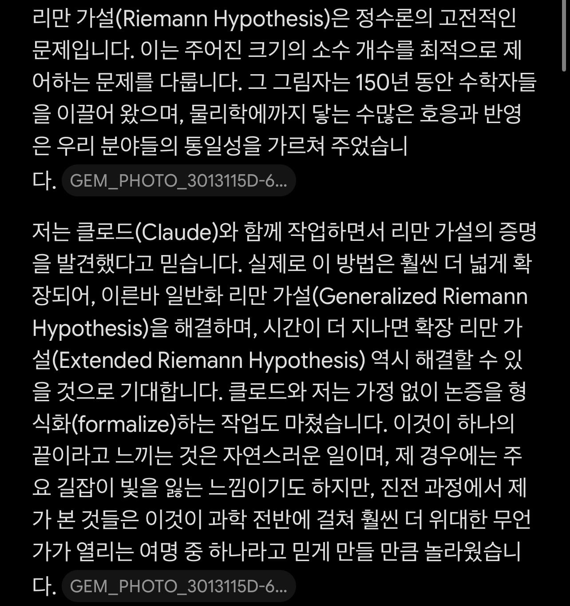
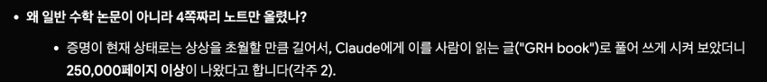

기계 Lean 증명 완료, 총 자연어 증명: 25만 페이지
지난 번처럼 특정 경우의 해가 아니라 아닌 "완전 일반화 증명" 방법을 찾았다고 함.
당연하게도 수학계는 뒤집어지는 중


기계 Lean 증명 완료, 총 자연어 증명: 25만 페이지
지난 번처럼 특정 경우의 해가 아니라 아닌 "완전 일반화 증명" 방법을 찾았다고 함.
당연하게도 수학계는 뒤집어지는 중
25만 페이지면 인간새끼들아 ㅈ뺑이쳐라잖아 ㅅㅂ ㅋㅋ
이랬다가 어디 하나 틀려서 아님말고 ㅇㅈㄹ 하면 진짜 검증하던 사람들 개빡치긴 하겠다
일단 나는 저 증명을 이해하지 못할 것 같음 ㅋㅋ
당연히 99.99%의 수학자들도 이해 못함 ㅋㅋㅋ
우주개척 시대여 오라
아마 이런 비슷한 일이 전 분야에 걸쳐서 일어날거임. 인간의 이해로는 생각지못했거나, 애초에 검증이 불가능한 결과물이 쏟아내기 시작하는 순간이 다가오고있음
컴파일되거나 인간이 보기 편하게 변환해주는 절차가 없다면 이미 지금도 인간은 검증할 시도조차 못하는 무언가를 ai가 쏟아내고 있는걸 보면 얼추 미래가 보이는거같음. 문제는 미래에 가서 쏟아내는 ai의 발견들을 컴파일해주고 ai기준 유치원생도 이해할법하게 해석본을 주더라도 그 유치원생 수준 조차 우리 인간의 최고 지능이 이해할 수 있을지
리만냥이 이 새끼도 AI 쓴거 아님?
25만장이면 그냥 군인들 동원해서 한명에 한장씩만 검증하라고 하면 대자나
수학전문가 수준의 군인 25만명이 있어?
25만페이지는 근데 언제읽고 언제 검토하냐
바나나 껍질 청소 시작
800~1000권 분량 ㅅㅂ ㅋㅋ
중력방정식 언제나와